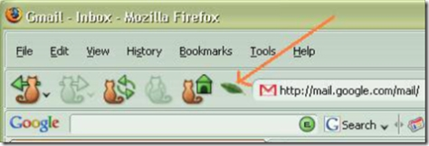
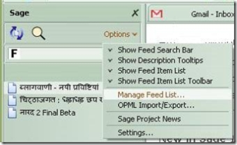
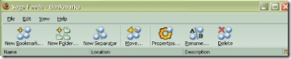
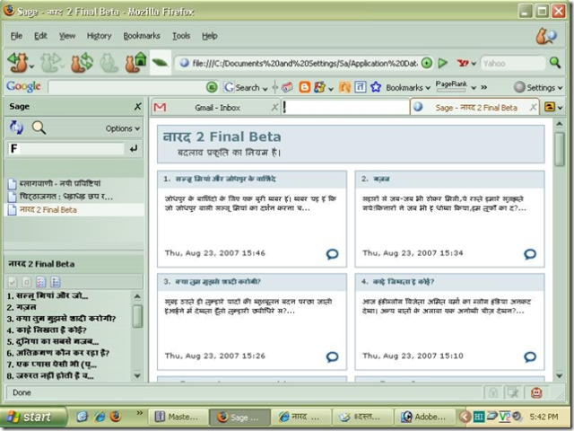

Easiest way to take blog's feed
फॉयरफॉक्समें चिठ्ठों की फीड लेने का सबसे आसान तरीका
इसके लिये हमें sage इन्स्टाल करना होगा, डरिये मत यह कोई सोफ्टवेर नहीं है बल्कि फॉयरफॉक्स के लिये बना आर एस एस रीडर और एटम फीड रीडर एक्सटेंशन है जो बहुत छोटा सा (मात्र 135Kb) है, और जितनी आसानी से इन्स्टाल होता है उतनी ही आसानी से अपना काम करता है।
sage इन्स्टाल करने के लिये सबसे पहले आप इस पोस्ट को दोबारा से फॉयरफॉक्स में खोलें
और
Sage 1.3.10: यहाँ
क्लिक कीजिये जिससे एक खिड़की खुलेगी और आपको sage इन्स्टाल के बारे में पूछा जायेगा, आप इन्स्टाल पर क्लिक कर लीजिये और फॉयरफॉक्स को रिस्टार्ट कर लीजिये।
जब रिस्टार्ट हो जाये तब देखिये आपके नेविगेशन बार पर जहाँ आप किसी वेब साईट का पता लिखते हैं उसके पास एक छोटा सा पंख नजर आ रहा होगा। इस तरह

उस पर क्लिक कीजिये, क्या कहा पंख नहीं दिख रहा, चलिये Alt+z दबाइये वह भी नहीं हो रहा तो पेज में सबसे उपर Tools लिखा है उस पर क्लिक कीजिये sage लिखा हुआ दिखेगा उस पर क्लिक कीजिये. ... हाँ, अब साईडबार खुल गया ना sage का। अगर आपका साईडबार खुल चुका है तो आपने पहली परीक्षा पास करली और अब बस आपको चिठ्ठों की फीड इसमें जोड़नी है।
नारद, चिठ्ठाजगत और ब्लॉगवाणी की फीड कॉपी करें
तीनों एग्रीग्रेटर तथा अपने मनपसन्द चिठ्ठे को एक बार खोलें और उसमें साईड में यह चिन्ह बना होगा उस पर क्लिक करें, अगर यह चिन्ह नहीं है तो RSS लिखा होगा उस पर क्लिक करें जो साईट खुली है उसे कॉपी कर लेवें। और अब sage के साईडबार में option पर क्लिक करें

और manage Feed List पर क्लिक करें अब यह खिड़की खुली है।

इसमें New Book Marks पर क्लिक करे देवें, और Name की जगह अपने मनपसन्द चिठ्ठे का नाम यानि ॥ दस्तक॥ , नारद, चिठ्ठाजगत या ब्लॉगवाणी लिख देवें और Location की जगह आपने जो चिठ्ठे की लिंक कॉपी किया था ,उसे पेस्ट कर देवें। चलिये आपकी सहायता के लिये चारों की फीड भी लिख देते हैं ताकि आपको खास परेशानी ना हो।
http://www.chitthajagat.in/rss.xml = चिट्ठाजगत : धड़ाधड़ छप रहे चिट्ठों में खोजें
http://blogvani.com/feed.aspx?mode=new = ब्लागवाणी - नयी प्रविष्टियां
http://narad.akshargram.com/feed = नारद 2 Final Beta
http://nahar.wordpress.com/feed = ॥दस्तक॥
चारों फीड एड कर लेने के बाद Load this book mark in the side bar को चेक कर लेवें और विन्डो को बन्द कर देवें, काम खत्म हो चुका है अब देखिये साईडबार में चित्र क्रमांक २ की तरह साईडबार दिख रहा है, अब आप जिस एग्रीग्रेटर को देखना चाहें उस पर क्लिक कीजिये ..... अरे जे क्या हो गया :) यहाँ तो सारे ताजा लेख दिख रहे हैं। इस तरह

आपको जो लेख पढ़ना हो उस पर क्लिक किजिये और लेख पढ़िये।
***
Image unavailable in this archive (original image)Hindi Blog Aggregator (original image)
Technorati tags: Fire fox, RSS Feed Reader, Sage, फीड रीडर, मनपसन्द चिठ्ठे, ॥दस्तक॥, फायरफॉक्स